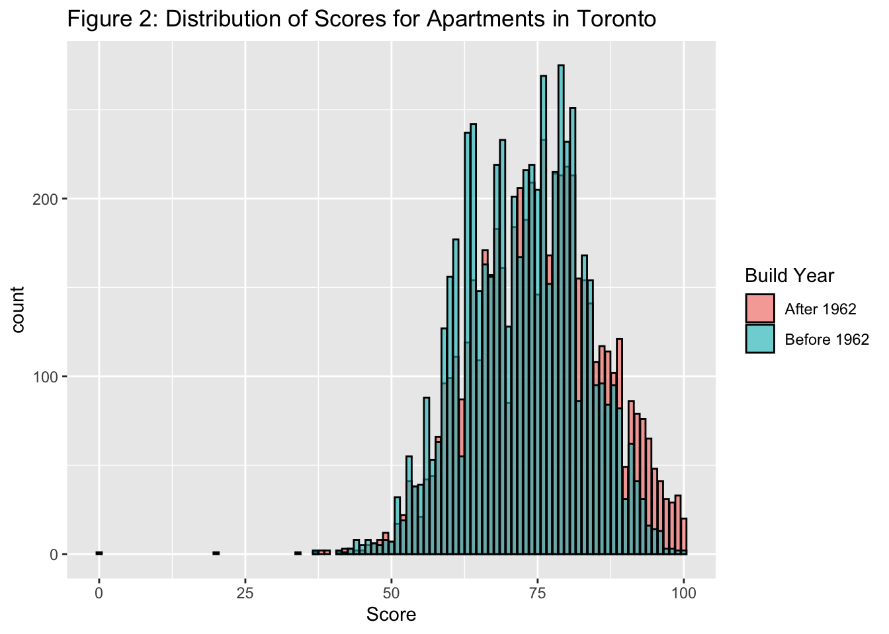

The COVID-19 Pandemic has shifted people’s attention to renting rather than buying. In this paper, we explore the Apartment Building Evaluation dataset from the City of Toronto to measure the impact on apartment age to its score given by the city. We know that prices for apartments are falling and we need to find a way to determine which one’s are better to rent, especially with how quickly they go off the market. We found that older apartments tend to score lower on the City’s rating scale for apartments.
In this paper, we will be taking a look at the apartment data from the City of Toronto’s Open Data. This dataset contains 3435 observations and the variables we will focus on are the apartment’s Ward, the apartment’s score and the year it was built. This dataset contains evaluations from all 25 wards in Toronto with scores ranging from a low of 37 to a few perfect 100s. The apartments included in this study were larger than 3 storeys and had at least 10 units in them. The building years of apartments range from 1805 to 2019. The apartments included in the data are part of the Apartment Building Standards bylaw, a bylaw ensuring safety for both landlords and tenants and all apartments must have these evaluations done. I also created another dataset that groups the apartments by the year they were built, this was useful for our final plot. The purpose of this study was to analyze the year an apartment was built and relate it to the score it received. The plots included are interactive, so you can hover your cursor over the plots to get more information and also filter the graphs by categories.
The main method of investigation for this study was analyzing the relationship between the age of apartments and the score they received. This was done through plotting different types of graphs focusing on different aspects with each graph. Four graphs have been plotted and they are labelled Figures 1-4. The final plot, figure 4 groups the apartments by age and takes their average score and plots them. This graph was the most telling for our findings because we can see a relationship between the two variables. We found that minus some outliers, the relationship between Age and Score was fairly strong and linear. Using other figures, we found that wards with lower median scores tended to higer proportions of older apartments. The results observed are significant when it comes to the matter of renting and allowing tenants to find out which apartments should be better in the long run.
Overall this paper focuses on the impact of building age and the score it received from the City of Toronto. The 4 figures are presented to help display the connection between age and score. The next steps for this study would be to try and include more (smaller) apartments in the observations and investigate if building age is still related to the score received. A study on the impact of property type would be a potential topic for the future to see if there is another determinant for scores. Lastly, the study did encounter some weaknesses. The major weakness is related to the potential future work and the lack of inclusion of smaller units. If smaller units were included in the data there is a potential that these apartments could even out the distribution of apartments for each ward.
To conduct our study, data was scraped from the City of Toronto’s website using the “opendatatoronto” package. Certain variables were then converted to numeric class to make it easier to plot and observations with NAs were dropped due to multiple variables being empty. A new variable called before_mean was created to show if an apartment was built before or after 1962, the average year of building for Toronto apartments. Lastly, a new dataset was created which groups the apartments by the year they were built, this was crucial for figure 4.
Figure 1 focuses on the age of apartments. Filtering them by being built before or after 1962, the average year of building for the apartments observed.

This plot shows the distribution of the scores recorded for each apartment while also categorizing them whether they were built before or after the average year of building for apartments in Toronto (1962).
This plot focuses on where the scores fall in each ward, the thick bar on each box represents the median (where half of the data is above and below that point). The line across the plot represents the median of all apartments and gives us a good idea of whether an ward’s apartments are better or worse than the whole population. We can see that ward 17 has the highest median score at about 90 while it appears that ward 4 has the lowest median at 70.
For this plot we used the other dataset created from the original data. From this plot we can see that there is a linear relationship between the two variables, as the year built increases, the score increases as well, showing that older apartments bring down the scores of the ward they’re in. We can also see that minus the few outliers, the correlation between year built and score gets stronger.
After looking at the data and analyzing the plots, we can conclude that there is a relationship between the age of an apartment and its rating. We can also conclude that apartments with an older average age will have a lower score. From figure 4, we find that when grouping apartments by age the correlation between age and score is 0.49. This number shows the relationship between two variables and shows that there is a moderate correlation. This is significant for our results because it proves that we can explain the score from age. This investigation was important because rent prices in Toronto have been dropping and renters need to know which apartments are worth their price. In a Financial Post article, they say that housing prices in Canada are dropping and that includes rental properties as well. The relationship between these dropping prices and this paper is that when prices drop further, there may be younger apartments on the market and it is important for renters to know that it’s safer to choose the newer ones. The findings are also significant because as new apartments are being built at faster rates, renters need to be able to tell which apartment is better overall. After all, there is a benefit to having a new apartment as they are usually more modern layout and technology wise.
Figure 1 in this study looks at the age of apartments. We see that not all wards are distributed evenly, such as Ward 17 which has 58 of the 62 apartments being “new” in terms of Toronto apartments. Figures 1 and 2 are similar as they show the drop in overall score between age groups, further proving that age influences scores. Figure 3 helps give a look at which wards are better than others in terms of scores. When we pair the observations of Figure 3 with Figure 1, we see higher scores are more common in wards with newer apartments. Finally, we come to figure 4 which displays the distribution of scores between years and once again backs up our findings. These findings are useful for the landlords to know where to set their prices but are also useful for renters because they figure out if a potential apartment is worth looking at before they even go.
We are then led to the practical application of this study, why is it important? The importance of relating an apartment’s age to its score is that we can apply these results to other parts of real estate like the price of an apartment. A relevant article to our study is from the Toronto based blog “Narcity” called, “These Are The Toronto Neighbourhoods With The Cheapest Rent, According To New Data From The City”. The article was published last year but is still relevant because most of the observations in our dataset are from before this year. The article highlights each of the 25 wards in Toronto and shows their average price of rent with data taken from the City. When comparing the article’s findings with ours, we find that 3/5 top 5 were Wards with higher proportions of young apartments as shown in figure 1. This is significant because it shows how we can apply our findings to predict prices in the future and because rental prices are dropping, tenants need to find which apartments are worth the price and which are overpriced.
Although we had success with our observations and were able to find a relationship hidden in the data, there were some weaknesses encountered. Firstly, this dataset only looks at apartments that are larger than 3 storeys and have at least 10 units. These apartments usually aren’t grouped in with larger apartments like the ones in the study because the owners are usually smaller landlords and don’t have the same financial flexibility as the bigger landlords. The exemption of these apartments is valid but it leads to a gap in our results because there are many apartments available to rent that are smaller homes and the inclusion of these apartments could change our results. Another weakness in this study was that the distribution of apartments in the wards was not even. There were wards like ward 12 which had over 300 apartments evaluated while ward 23 had under 10 apartments included. The large difference in distributions impacts our results because when we try to classify wards by their average apartment score, a ward’s score will be more volatile if it has fewer observations. We encounter this issue because we see from figures 1 and 4 that the apartments with fewer apartments rank higher than wards with more apartments. This could be solved by including more apartments as mentioned earlier because some wards are densely populated with houses and apartments in houses rather than large buildings. Lastly, we have to acknowledge that we don’t fully know how the inspector arrives at a certain score or what the criteria are to score a perfect 5/5 in a category. This is an issue because one inspector can be more strict than others and that will cause scores to drop when that inspector assesses a building. The solution for this is to display the scoring scale so we can rule out the possibility of inspectors skewing results.
When looking to the future and our next steps, most of the tweaks are centred around the collection of observations. First, for the next study, I feel that smaller apartments should be included. If smaller apartments are included the number of observations for each ward could even out and we could get a clearer picture of the impact of age on the rating To complete this, apartments could be evaluated using the same scale but when inputted into the dataset there should be another variable telling us if it’s larger or smaller. Another interesting question we can look to answer in the future is concerning the property type and its impact on its score. We did observe some data that looked like property type influenced score but with a larger dataset, we can find if that question has a definitive answer. Lastly, I would like to apply this data to rental prices as mentioned above. It would be an interesting study to see if older apartments are priced similarly to how they are scored.
This report used: Wickham et al. (2019), Wickham (2016), Gelfand (2020)
JJ Allaire and Yihui Xie and Jonathan McPherson and Javier Luraschi and Kevin Ushey and Aron Atkins and Hadley Wickham and Joe Cheng and Winston Chang and Richard Iannone (2020). rmarkdown: Dynamic Documents for R. R package version 2.3. URL https://rmarkdown.rstudio.com.
Keith, Elizabeth. “These Are The Toronto Neighbourhoods With The Cheapest Rent, According To New Data From The City.” Narcity, Narcity Media, 2019
McClelland, Colin. “Home prices to drop, new report predicts — and even Toronto and Vancouver won’t be immune.” Financial Post. Financial Post